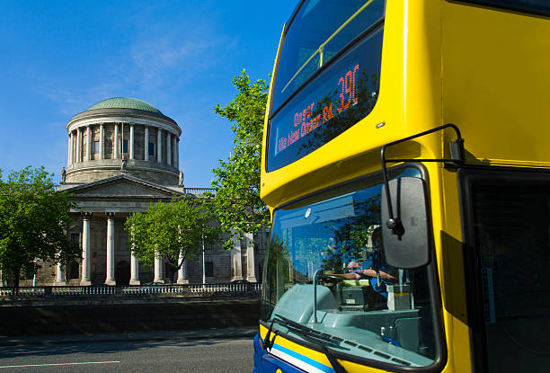
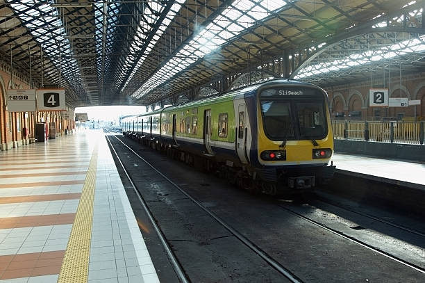
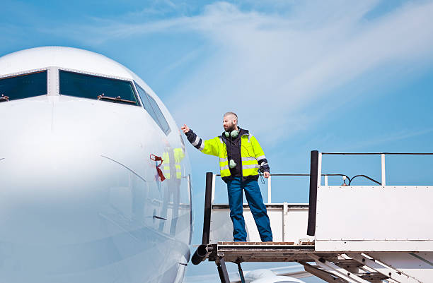

| 2017 | 2018 | 2019 |
|---|---|---|
| 150,000 | 170,000 | 165,000 |
Bus
Bus Éireann operates Cork, Galway, Limerick, and Waterford city bus services and town services. It also operates commuter and intercity bus services throughout Ireland. Bus Éireann commenced operations in 1987 with a focus on the customer and a cost effective service.Dublin Bus is the biggest public transport provider in the Greater Dublin Area operating over 136 routes. Normal services run from 5.00am until midnight. The Nitelink service operates from midnight until 4.00am on Friday and Saturday nights. The Dublin Bus range of services include Cross City, Radial, Orbital, DART Feeder, Airlink, express limited stop commuter services, Nitelink and Sightseeing tours. The focus of Dublin Bus is to provide a safe service and promote a sustainable community life in Dublin.
Train
Sligo Mac Diarmada station, also known as Sligo railway station, is a mainline railway station which serves the town of Sligo in County Sligo, Ireland. It is a terminal station which now has two platforms and an intermediate carriage siding. The railway at the station is elevated above the surrounding streets and the station building dominates its surrounds. There is a passing loop at the approach to the station. It is named after Irish patriot Seán Mac Diarmada. Iarnród Éireann, Ireland's national railway operator, runs inter-city rail services between Sligo and Dublin on the Dublin-Sligo railway line. The rail lines here connect on a line from dublin connolly station.
Airport
Since 2003, flag-carrier, low-cost and regional airlines including Aer Lingus, MyTravelLite, Bmibaby, Ryanair, Aer Arann, flybe, Lufthansa and EasyJet have added routes to the UK and mainland Europe. Not all have proven successful, but by 2005 the airport was handling 500,000 passengers per annum.It was voted the Republic of Ireland's best regional airport in 2006 and 2009 by the Chambers of Commerce of Ireland.2007 was a notable year, with scheduled transatlantic services to New York and Boston commencing in May, operated by the now-defunct Flyglobespan.A record 629,000 passengers used the airport in 2008, a 13% rise compared to the previous year.[6]The installation of the Category II Instrument Landing System in April 2009 has resulted in a significant reduction in the number of flight diversions to other airports due to poor visibility – the airport is 200 metres above sea level. August 2009 was the busiest month for three years, with 81,000 passengers: 28 August was the busiest day in the airport's history, with over 4,500 passengers.